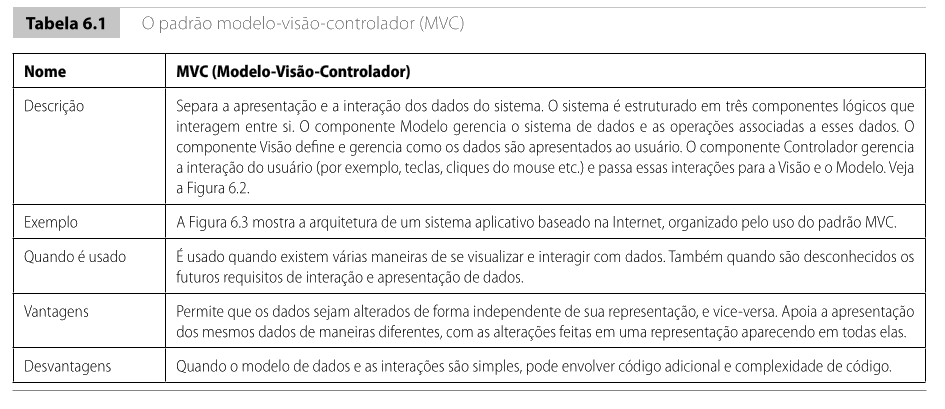
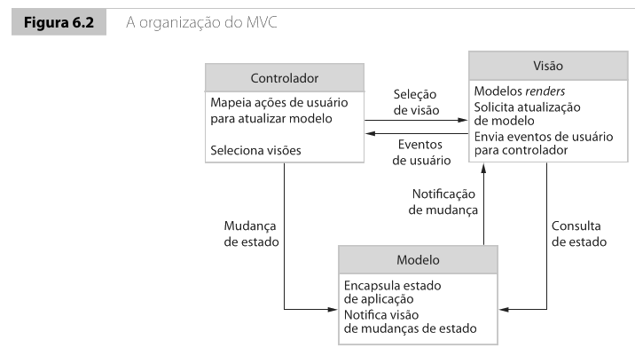
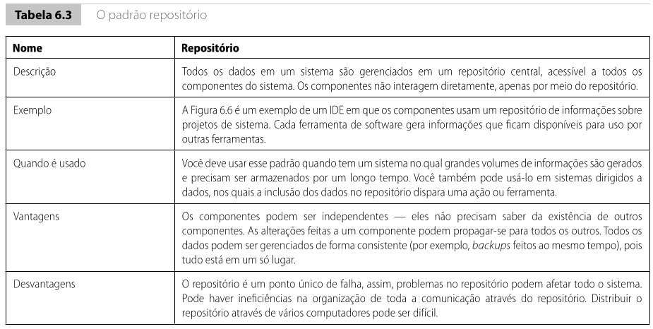
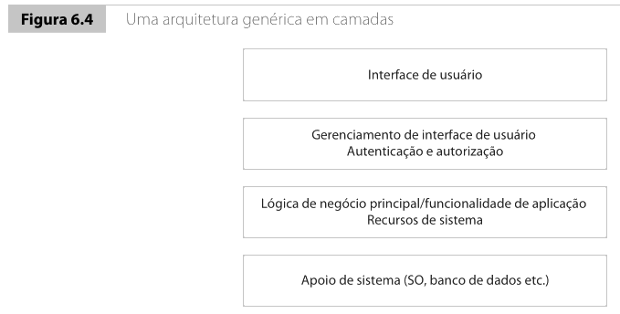
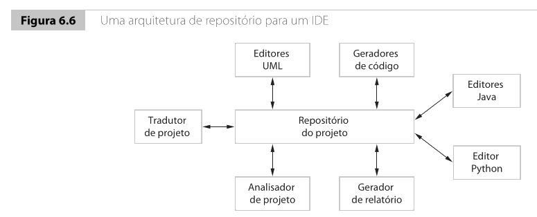
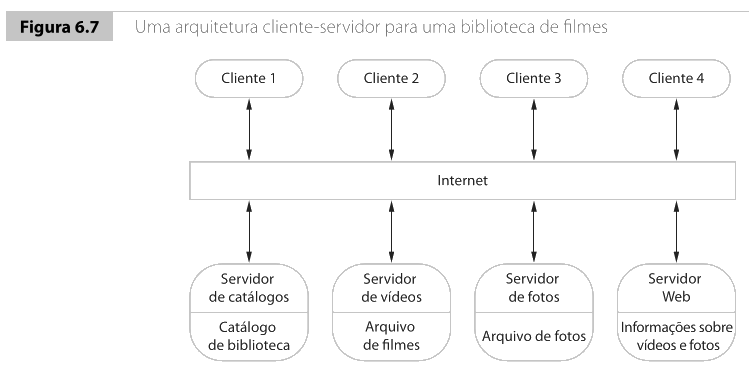
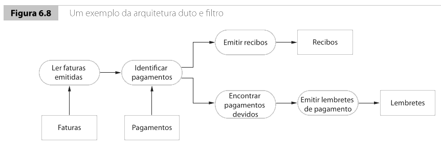

Introdução7.1
Na aula anterior, modelamos um sistema com UML para enxergar funcionalidades, entidades, colaborações e fluxo. Isso foi importante porque nos ajudou a sair da descrição textual dos requisitos e construir representações mais organizadas do problema. No entanto, ainda falta uma pergunta decisiva: como o software será organizado em partes grandes, com responsabilidades bem separadas, para que possa evoluir sem virar um acúmulo caótico de classes, telas e consultas ao banco?
Essa é a pergunta da arquitetura de software.
Quando falamos em arquitetura, não estamos discutindo detalhes finos de implementação, como o nome de uma variável, o método de uma classe específica ou a sintaxe de um framework. Estamos discutindo a estrutura global do sistema, os grandes componentes, a forma como se relacionam e o tipo de organização que melhor atende aos requisitos funcionais e, principalmente, aos requisitos não funcionais.
Segundo Sommerville, o projeto de arquitetura é o elo crítico entre os requisitos e o projeto detalhado. É nele que começamos a decidir a forma do sistema como um todo. E isso importa muito, porque mudar uma função ou uma classe isolada costuma ser relativamente barato; já refatorar a arquitetura de um sistema grande, quando ele já está em produção, costuma ser caro, arriscado e demorado.
Se duas equipes diferentes precisassem implementar o mesmo sistema acadêmico, uma poderia acabar com um software fácil de manter e a outra com um sistema frágil, mesmo que ambas usassem a mesma linguagem, o mesmo banco e o mesmo framework?
Se sua resposta foi “sim”, então você já percebeu o papel da arquitetura: a organização global importa tanto quanto a tecnologia escolhida.
O que é arquitetura de software7.2
Arquitetura de software é a organização de alto nível de um sistema. Ela descreve:
- quais são os principais componentes ou subsistemas;
- como esses componentes se relacionam;
- como dados, controle e responsabilidades circulam entre eles;
- como essa organização ajuda o sistema a satisfazer seus requisitos.
Sommerville chama atenção para um ponto muito importante: a arquitetura não existe apenas para “deixar o sistema bonito”. Ela afeta diretamente características como:
- desempenho;
- segurança;
- disponibilidade;
- robustez;
- manutenção;
- distribuição do sistema em rede.
Ou seja, os requisitos funcionais dizem o que o sistema deve fazer, mas a arquitetura influencia fortemente como bem ele fará isso.

Observe o tipo de visão que aparece na figura do Sommerville: ela não detalha métodos, nem atributos, nem código. Ela mostra apenas os grandes blocos e como se comunicam. Esse é o nível de abstração mais útil quando queremos conversar com stakeholders, planejar o sistema ou tomar decisões estruturais.
Por que arquitetura importa7.2.1
Sommerville destaca pelo menos três razões centrais para projetar e documentar a arquitetura de software de forma explícita:
- Comunicação entre stakeholders. A arquitetura oferece uma visão de alto nível que ajuda gerentes, clientes, analistas, arquitetos e desenvolvedores a discutirem o sistema sem se perderem nos detalhes da implementação.
- Análise antecipada do sistema. Muitas consequências importantes de projeto aparecem cedo quando pensamos na arquitetura, especialmente as relacionadas a desempenho, disponibilidade, proteção e manutenção.
- Reúso em larga escala. Sistemas parecidos tendem a compartilhar estruturas arquiteturais parecidas. Isso permite reaproveitar ideias, modelos, padrões e até partes inteiras da organização do software.
Na prática, a arquitetura também ajuda a responder perguntas que aparecem cedo em qualquer projeto real:
- como separar interface, regra de negócio e dados?
- como distribuir o sistema entre cliente, servidor e banco?
- como permitir evolução futura sem quebrar tudo?
- como organizar o trabalho de várias equipes?
Decisões de projeto arquitetural7.3
Sommerville trata o projeto de arquitetura menos como uma receita fixa e mais como uma sequência de decisões importantes. Durante esse processo, o arquiteto precisa lidar com questões como:
- existe uma arquitetura genérica que pode servir de base para este tipo de sistema?
- o sistema será centralizado ou distribuído?
- que estilo arquitetural faz mais sentido?
- como o sistema será decomposto em componentes?
- como esses componentes vão se comunicar e ser controlados?
- como os requisitos não funcionais influenciam essa escolha?
- como a arquitetura será documentada?
Essas perguntas deixam claro que arquitetura não é apenas um desenho bonito. Ela é uma resposta técnica e organizacional para as necessidades do sistema.
Requisitos não funcionais e arquitetura7.3.1
Um dos pontos mais importantes do capítulo 6 é a relação entre arquitetura e requisitos não funcionais. Sommerville argumenta que a escolha arquitetural deve levar em conta, explicitamente, qualidades como:
- Desempenho. Às vezes vale concentrar operações críticas em poucos componentes ou na mesma máquina para reduzir comunicação.
- Proteção. Uma organização em camadas pode ajudar a isolar partes sensíveis do sistema.
- Segurança. Centralizar operações sensíveis em poucos componentes pode facilitar validação e controle.
- Disponibilidade. Sistemas altamente disponíveis costumam exigir redundância e substituição de componentes sem parada total.
- Manutenção. Componentes menores, autocontidos e com baixo acoplamento facilitam evolução.
Esse trecho é importante porque combate uma confusão comum entre estudantes: a ideia de que a arquitetura é escolhida apenas por gosto ou moda tecnológica. Em um projeto profissional, a pergunta correta não é “qual arquitetura está popular?”, mas sim “qual organização ajuda este sistema a cumprir seus objetivos e restrições?”
Visões arquiteturais7.4
Uma única figura raramente é suficiente para representar tudo o que importa na arquitetura de um sistema. Por isso, Sommerville apresenta a noção de múltiplas visões arquiteturais.
Com base no modelo 4+1, ele destaca quatro visões fundamentais:
- Visão lógica. Mostra as abstrações principais do sistema, como classes ou objetos centrais.
- Visão de processo. Mostra como o sistema se comporta em execução, em termos de processos e interações.
- Visão de desenvolvimento. Mostra como o software é decomposto para ser implementado por equipes.
- Visão física. Mostra em que hardware ou nós de rede os componentes serão distribuídos.
Além disso, o livro também comenta a utilidade de uma visão conceitual, mais abstrata, para discutir a essência do sistema e orientar a decomposição inicial.
O ponto pedagógico importante aqui é simples: arquitetura não é um único desenho universal. Dependendo da pergunta que queremos responder, a melhor visão muda.
Se a pergunta for “quais grandes módulos existem?”, uma visão conceitual basta. Se a pergunta for “como isso roda em rede?”, você precisa de uma visão física ou cliente-servidor. Se a pergunta for “como a equipe vai dividir o trabalho?”, a visão de desenvolvimento passa a ser mais útil.
Estilos arquiteturais7.5
Sommerville usa a ideia de padrões ou estilos arquiteturais como formas já experimentadas de organizar sistemas. Um estilo arquitetural é, portanto, uma organização recorrente, usada em muitos sistemas diferentes, que carrega vantagens, limitações e contextos típicos de uso.
Nesta aula, vamos estudar cinco estilos relevantes:
- MVC;
- arquitetura em camadas;
- repositório;
- cliente-servidor;
- duto e filtro.
É importante entender desde já que esses estilos não são mutuamente exclusivos. Um mesmo sistema pode combinar mais de um deles. Um sistema Web, por exemplo, pode usar MVC na interface, camadas no backend e cliente-servidor na distribuição lógica.
MVC7.5.1
O padrão Model-View-Controller separa um sistema em três partes lógicas:
- Model: representa dados e regras associadas;
- View: representa a forma como os dados são exibidos;
- Controller: coordena a interação do usuário e aciona modelo e visão.
Segundo Sommerville, ele é especialmente útil quando:
- existem várias formas de apresentar os mesmos dados;
- o modo de interação pode evoluir com o tempo;
- queremos alterar a interface sem misturar tudo com a lógica de negócio.
As principais vantagens do MVC são:
- separação entre dados, apresentação e controle;
- facilidade de alterar visualizações;
- possibilidade de reaproveitar o mesmo modelo com interfaces diferentes.
A principal desvantagem é que, em sistemas muito simples, ele pode introduzir complexidade desnecessária.


Exemplo curto em C++: MVC7.5.1.1
class Pet {
public:
std::string nome;
std::string servico;
};
class PetView {
public:
void mostrar(const Pet& pet) {
std::cout << "Pet: " << pet.nome << "\n";
std::cout << "Servico: " << pet.servico << "\n";
}
};
class PetController {
private:
Pet& model;
PetView& view;
public:
PetController(Pet& m, PetView& v) : model(m), view(v) {}
void atualizarServico(const std::string& novoServico) {
model.servico = novoServico;
}
void renderizar() {
view.mostrar(model);
}
};
Nesse exemplo:
Peté o modelo;PetViewé a visão;PetControllercoordena a alteração e a exibição.
O exemplo é pequeno, mas suficiente para mostrar a ideia principal: quem guarda os dados não é quem decide como exibi-los, e quem coordena a interação não precisa conter toda a regra de visualização.
Arquitetura em camadas7.5.2
Na arquitetura em camadas, o sistema é organizado em níveis, onde cada camada usa os serviços da camada imediatamente abaixo e fornece serviços para a camada acima.
Sommerville destaca esse estilo como uma forma de promover separação e independência. Em um sistema corporativo típico, é comum enxergar algo próximo de:
- interface do usuário;
- gerenciamento da interface;
- lógica de negócio;
- apoio de sistema, banco de dados e sistema operacional.

As vantagens principais são:
- melhor organização estrutural;
- substituição mais simples de uma camada, desde que a interface seja mantida;
- apoio a manutenção e evolução localizadas;
- boa aderência a cenários com preocupação de proteção multinível.
As limitações principais são:
- na prática, separar perfeitamente as camadas pode ser difícil;
- às vezes a camada superior quer acessar diretamente detalhes da inferior;
- múltiplas camadas podem adicionar overhead e afetar desempenho.
Exemplo curto em C++: camadas7.5.2.1
class AgendamentoRepository {
public:
void salvar(const std::string& pet, const std::string& horario) {
std::cout << "Salvando agendamento de " << pet
<< " em " << horario << "\n";
}
};
class AgendamentoService {
private:
AgendamentoRepository& repository;
public:
AgendamentoService(AgendamentoRepository& repo) : repository(repo) {}
void agendar(const std::string& pet, const std::string& horario) {
repository.salvar(pet, horario);
}
};
class AgendamentoScreen {
private:
AgendamentoService& service;
public:
AgendamentoScreen(AgendamentoService& srv) : service(srv) {}
void confirmar() {
service.agendar("Rex", "15:00");
}
};
Aqui aparece claramente o fluxo em camadas:
- a tela recebe a ação do usuário;
- a camada de serviço aplica a lógica da aplicação;
- o repositório lida com persistência.
Esse é um exemplo didático simples, mas mostra como a responsabilidade pode ser separada em níveis diferentes.
Repositório7.5.3
Na arquitetura de repositório, todos os dados importantes do sistema são mantidos em um repositório central compartilhado. Os componentes não interagem diretamente entre si; em vez disso, leem e escrevem nesse repositório comum.
Sommerville observa que esse estilo é apropriado quando:
- grandes volumes de dados precisam ser compartilhados;
- esses dados precisam ser armazenados por longo tempo;
- diferentes ferramentas ou componentes usam os mesmos dados.
Casos típicos:
- IDEs;
- sistemas CAD;
- sistemas de informação;
- ambientes dirigidos a modelos.

As vantagens principais são:
- compartilhamento consistente de dados;
- independência relativa entre componentes;
- centralização facilita backup, controle e consistência.
As desvantagens principais são:
- o repositório pode virar ponto único de falha;
- pode haver gargalos de desempenho;
- distribuir o repositório por várias máquinas pode ser difícil;
- novos componentes precisam se adaptar ao modelo de dados já definido.
Exemplo curto em C++: repositório7.5.3.1
class ProjectRepository {
public:
void salvarModelo(const std::string& nome) {
std::cout << "Modelo salvo: " << nome << "\n";
}
void gerarRelatorio() {
std::cout << "Relatorio gerado a partir do repositorio central\n";
}
};
class UmlEditor {
public:
void exportar(ProjectRepository& repo) {
repo.salvarModelo("Diagrama de Classes");
}
};
class ReportGenerator {
public:
void executar(ProjectRepository& repo) {
repo.gerarRelatorio();
}
};
Nesse caso, UmlEditor e ReportGenerator não precisam conversar diretamente. Ambos operam em torno do mesmo repositório central.
Cliente-servidor7.5.4
Na arquitetura cliente-servidor, o sistema é organizado como um conjunto de serviços oferecidos por servidores e utilizados por clientes.
Sommerville descreve três elementos centrais:
- servidores que oferecem serviços;
- clientes que os utilizam;
- uma rede que permite o acesso a esses serviços.
Esse estilo é muito comum em sistemas distribuídos e em sistemas baseados em Internet.

As vantagens principais são:
- distribuição natural de serviços;
- possibilidade de centralizar funcionalidades comuns;
- facilidade relativa de adicionar ou atualizar servidores.
As desvantagens principais são:
- cada servidor pode virar um ponto de falha;
- o desempenho depende da rede;
- ataques de negação de serviço e indisponibilidade de servidor tornam-se relevantes;
- a gestão pode ser difícil quando há vários servidores ou organizações envolvidas.
Exemplo curto em C++: cliente-servidor7.5.4.1
class CatalogServer {
public:
std::string buscarFilme(int id) {
return "Filme #" + std::to_string(id);
}
};
class CatalogClient {
private:
CatalogServer& server;
public:
CatalogClient(CatalogServer& srv) : server(srv) {}
void mostrarFilme(int id) {
std::cout << server.buscarFilme(id) << "\n";
}
};
Aqui não implementamos rede real, mas a separação lógica já aparece: o cliente solicita um serviço; o servidor o fornece.
Duto e filtro7.5.5
No estilo duto e filtro, o sistema é organizado como uma sequência de transformações. Cada componente processa dados de entrada, gera uma saída e a repassa para o próximo estágio.
Esse estilo é muito apropriado quando o problema pode ser naturalmente decomposto em etapas de processamento de dados.
Sommerville cita aplicações típicas como:
- processamento em lote;
- faturamento;
- compiladores;
- vários tipos de processamento de linguagem.

As vantagens principais são:
- reuso de transformações;
- clareza no pipeline de processamento;
- evolução por adição de novos filtros;
- possibilidade de implementação sequencial ou concorrente.
As desvantagens principais são:
- necessidade de formatos de dados compatíveis entre etapas;
- overhead de parsing e conversão entre estágios;
- pouca adequação para sistemas fortemente interativos com GUI complexa.
Exemplo curto em C++: duto e filtro7.5.5.1
std::vector<std::string> lerPedidos() {
return {"pedido1:pago", "pedido2:pendente", "pedido3:pago"};
}
std::vector<std::string> filtrarPagos(const std::vector<std::string>& pedidos) {
std::vector<std::string> pagos;
for (const auto& pedido : pedidos) {
if (pedido.find("pago") != std::string::npos) {
pagos.push_back(pedido);
}
}
return pagos;
}
void gerarRecibos(const std::vector<std::string>& pagos) {
for (const auto& pedido : pagos) {
std::cout << "Recibo emitido para " << pedido << "\n";
}
}
Esse pipeline é pequeno, mas mostra exatamente a ideia:
- uma etapa lê;
- outra filtra;
- outra transforma o resultado em saída útil.
Comparando os estilos7.5.6
Até aqui, fica claro que cada estilo responde melhor a um tipo de problema.
| Estilo | Melhor quando | Vantagem forte | Risco forte |
|---|---|---|---|
| MVC | há múltiplas visualizações e interação rica | separa apresentação de dados | pode complicar sistemas simples |
| Camadas | queremos organização clara por níveis | manutenção e separação de responsabilidades | fronteiras entre camadas podem vazar |
| Repositório | dados compartilhados são o centro do sistema | consistência e compartilhamento | ponto único de falha |
| Cliente-servidor | há serviços distribuídos para vários clientes | distribuição natural de funcionalidades | dependência de rede e servidor |
| Duto e filtro | o problema é naturalmente um pipeline de transformação | composição clara e reuso de etapas | ruim para forte interatividade |
Essa comparação é importante porque ajuda a combater uma simplificação muito comum: imaginar que existe uma arquitetura universalmente superior. Na prática, a escolha depende do tipo de sistema e dos requisitos dominantes.
Um mesmo sistema pode combinar estilos7.6
Um erro comum é imaginar que um sistema precisa “ser” apenas MVC ou apenas cliente-servidor ou apenas em camadas. Em projetos reais, isso quase nunca é verdade.
Considere um sistema acadêmico Web:
- ele pode usar MVC na interface e na lógica de interação com o usuário;
- pode usar uma arquitetura em camadas no backend;
- sua implantação lógica pode seguir um modelo cliente-servidor;
- pode usar um repositório central de dados no banco;
- pode ainda ter um subsistema de importação de notas com estilo duto e filtro.
Isso mostra que os estilos arquiteturais devem ser vistos como ferramentas conceituais e não como rótulos rígidos.
Conectando com a aula de UML7.7
Na aula anterior, usamos UML para enxergar diferentes perspectivas de um sistema. Agora, a arquitetura nos ajuda a dar um passo acima: em vez de pensar apenas em classes, casos de uso ou sequências, passamos a pensar em subsistemas, responsabilidades globais, distribuição e estratégias de organização.
Essa ligação é importante:
- requisitos ajudam a entender o problema;
- UML ajuda a modelar partes e relações;
- arquitetura ajuda a organizar a solução em larga escala.
Quando essa transição não é feita, o risco é o sistema nascer apenas como um conjunto de classes desconectadas, sem uma estrutura global coerente.
Escolhendo um estilo arquitetural na prática7.8
Ao escolher um estilo arquitetural, algumas perguntas práticas ajudam bastante:
- os dados precisam ser compartilhados por vários componentes?
- o sistema é fortemente interativo com interface rica?
- o problema parece uma sequência de transformações de dados?
- o sistema será distribuído em vários computadores?
- há forte preocupação com manutenção, segurança ou disponibilidade?
Se você faz essas perguntas cedo, a escolha arquitetural passa a ser uma decisão técnica argumentada, e não uma escolha por moda.
Framework não é arquitetura completa. Dizer que um sistema usa Spring, Qt, React, Django ou ASP.NET não basta para descrever sua arquitetura. No máximo, isso indica parte da pilha tecnológica e, às vezes, algum estilo favorecido por essa pilha.
Próximos passos7.9
Depois de entender os estilos arquiteturais, o próximo passo natural é aprofundar como essas decisões estruturais se relacionam com qualidades como manutenção, proteção, distribuição e evolução do software ao longo do tempo.